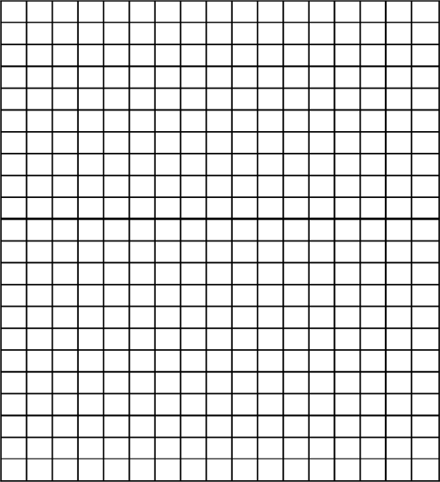

Creature Discomforts
When you want something done right, create something to do it for you, that's what I always say. Just take a look at this Petri dish. The dark organisms inside are sure to grow up big, strong, and exquisitely evil. Of course, you have to keep your creations in line; that's why my babies are confined to grow only inside the dish, where my tiny demon assistants can stand among them and constantly torture them. (The demons have no effect on my creations' growth… they just amuse me.) It'll take some time, but once they've finished maturing, I'll never have to perform an evil act myself again…

ACROSS
- 1
- Alias
- 4
- Maker of diecast tractors
- 6
- Skiing device that's half as useful as the T-shaped one
- 10
- Part of Asia
- 14
- Slow down
- 15
- A criminal may have one
- 17
- Flash producer
- 19
- '70s singer Teri
- 20
- Work Second City
- 23
- Say without saying
- 24
- Vocabulary
- 25
- Supplicate
- 27
- Patricia McKillip realm
- 28
- Nova, e.g.
- 29
- Pretty much any Skywalker
- 30
- Tung preceder
- 32
- Stuff worn by Aniston in Office Space
- 33
- He wants a hamburger today
- 34
- Cartoon character from the London Evening Standard
- 39
- Communication style at Gallaudet
- 40
- Penn & Teller's psychic gorilla
- 41
- Big shoe size
- 42
- Alley end?
- 44
- Supply
- 45
- Palace of Kangla site
- 46
- And not
- 47
- Football's Dawson
- 48
- Keep one of these on "it"
- 49
- Pinch pennies
- 50
- U2 single (or any single?)
- 51
- Catalyst of many a pirate quest
- 52
- The Doctor's foe
- 55
- Maddox, to Angelina Jolie
- 56
- Jennifer, on AbFab
- 57
- Tax, in Tours
- 58
- Four-track albums
- 60
- Zidovudine
- 61
- Guitarist Paul
- 62
- You might have one in Kalamazoo
- 63
- Unite
- 64
- Cartoon "ee-diot"
- 66
- Omaha Ak-Sar-Ben Knights assn.
- 67
- Killer ___
- 69
- Animated dervish, for short
- 71
- Make a flat call from the button, perhaps
- 73
- Korean airport
- 74
- What a bull doesn't want to hear
- 75
- Brave
- 76
- Half of Berlin, once
- 77
- Max Thieriot, in the upcoming Nancy Drew film
- 78
- Utah city near Brigham Young University
DOWN
- 1
- US military in WWI
- 2
- Bus driver of note
- 3
- "Based on ___ story"
- 5
- What Doc Hopper wanted from Kermit's relatives
- 6
- Type of Swedish bread
- 7
- Mark with little dents
- 8
- Worshipped
- 9
- Store an action figure, perhaps
- 11
- Thick ___ brick
- 12
- Subject of a Hogarth painting
- 13
- Exertion
- 16
- Mattel product
- 18
- What, by now in this Hunt, you're really really good at
- 21
- Devil-horned boy in a videogame
- 22
- Fenway denizens
- 25
- Navy, e.g.
- 26
- Singer Brickell
- 27
- Harvey Kurtzman comic
- 29
- Celeb who recently denied being a Scientologist
- 30
- Carrier on which Knute Rockne died
- 31
- Abe, et al.
- 32
- Ms. Castleberry, on her sitcom
- 34
- One member of W.I.T.C.H.
- 35
- Frequently
- 36
- "Rule," a generation or three back
- 37
- What graphite appears to be
- 38
- Force forward
- 40
- Killer of Orpheus
- 43
- Fix one's makeup, perhaps
- 44
- Takes out like the Kingdome
- 45
- Pamela Anderson features
- 51
- Made like Bossy
- 53
- Split ___
- 54
- Krazy ___
- 55
- Paris exhibition, with The (and a method of solving this puzzle?)
- 58
- Chow down on
- 59
- Harvard Lampoon editor George
- 62
- Ernst Gräfenberg's namesake
- 63
- The world ends with one
- 65
- Order of Skull & Bones site
- 66
- "Fantasy" guitarist ___ Nova
- 67
- Bygone
- 68
- Those who employ hos
- 70
- He's dead, baby
- 72
- Corporal in Henry V